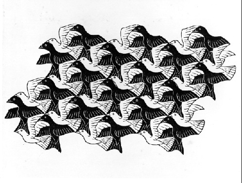
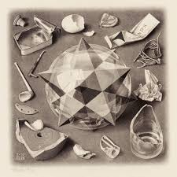
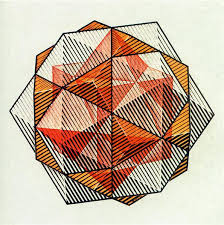
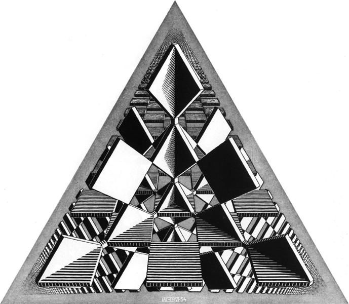
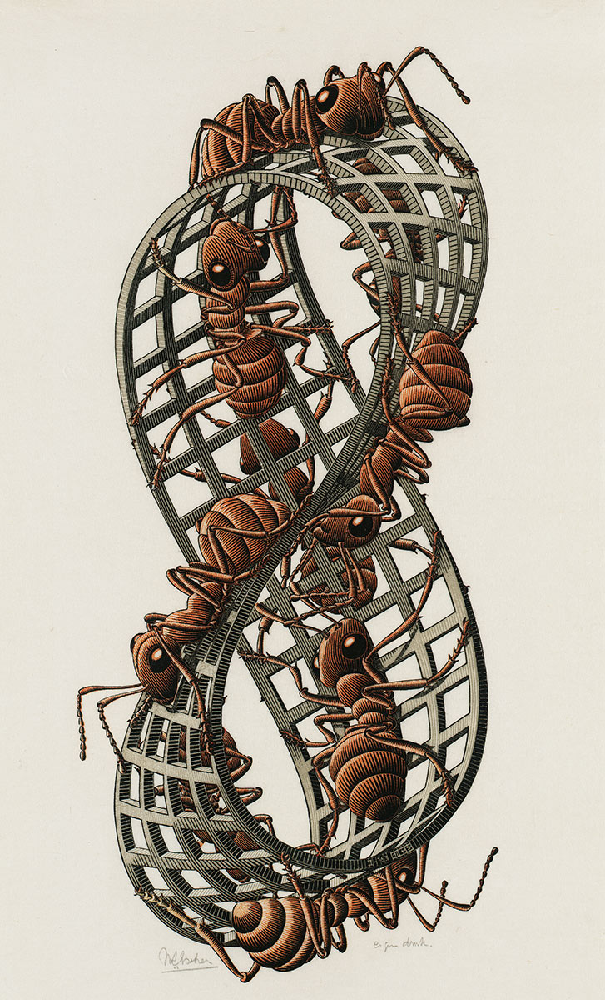
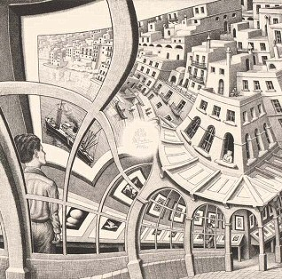
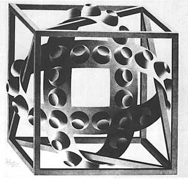
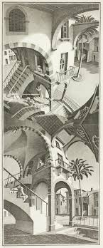
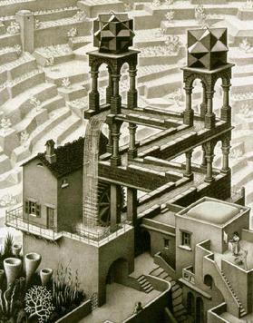

Intersection of Mathematics and Artistry — A Study of M.C. Escher
When we think of mathematics, those observing from outside will see a systematic study of objects in their abstract sense and their interaction with each other, but anyone who has ever been involved in the study of this highly fragile yet robust subject matter will know of its innate beauty and its potential to greatly create art. Throughout history, many have utilised this beauty in pursuit of aesthetic, creative art. One such artist is M.C. Escher. Known famously for his lithographies, specifically his lithography 'Relativity', the themes of mathematical analysis hold a strong presence in his art.
Study of Tessellations


A major part of M.C. Escher's study focused on the analysis of tessellations. A tessellation is a repeating, interlocking pattern with no space left between the repetitive pattern. M.C. Escher wove ideas of infinity and boundlessness with his fascination for the creation of tessellations. Starting with simple geometric shapes such as triangles and squares, he went on to analyse more complex structures and, by using appropriate distortions, produced mesmerising art.
His use of scaling also revealed his fascination with infinite repetition, underscoring his appreciation for infinity and unbounded structures. We can see this in the work Reptiles, where he depicts frogs escaping from two dimensions only to collapse back into the pattern. In fact, M.C. Escher often uses reptiles in his many tessellation works and also other art as well.
Study of Polyhedra


Though he is famous for his illusions and tessellations, M.C. Escher also spent a lot of time studying regular polyhedra (Platonic and Archimedean solids). By projecting three-dimensional polyhedra onto the Euclidean plane, he constructs perceptually ambiguous embeddings that intrigue the viewer. He also constructed some structures to showcase the beauty of regular polyhedra, many of which are preserved to this day. A combination of polyhedra with other artistic tools, such as the frogs, in his work Stars, showed his deep appreciation for using mathematics as a tool to express his art. Though he was historically not the first to incorporate geometric shapes, with famous artists like Da Vinci and Luca Pacioli, his inspiration is undeniable throughout his work.
Study of Space
M.C. Escher was also fascinated with the structure of space and the ways in which it can be represented, perceived, and transformed.

In Three Intersecting Planes, he demonstrates how flat surfaces can convincingly evoke depth, highlighting the mind's ability to reconstruct spatial relationships from limited visual cues.

In Circle Limit III, inspired by H.S.M. Coxeter, Escher visualizes hyperbolic space using the Poincaré disk model. Here, figures diminish in size as they approach the boundary, which lies at an infinite distance within the geometry. The space though internally consistent, defies Euclidean properties such as the existence of rectangles!

Escher also explored topology in Möbius Strip II (Red Ants), illustrating a surface with only one side. The ants appear to traverse different faces, but in reality move along a single continuous surface, a property that most of those when introduced to topology are fascinated by.

Finally, Print Gallery depicts a self-referential loop, where space folds back onto itself. Its construction introduces a central singularity, a point where the geometric system breaks down, revealing the limits of representing infinite recursion within a finite plane.
Study of Visual Paradoxes
His frequent exploration of visual paradox is what M.C. Escher is most popular in the modern day for. We will look at a few of his works to see his impact.

In Cube with Ribbons, Escher exploits the interplay of light, shadow, and curvature to challenge spatial coherence. The shading on the ribbons suggests a consistent three-dimensional structure, yet their interweaving around the cube produces a configuration that cannot exist in Euclidean space. The viewer is forced into a contradiction frequently made by Escher: the visual cues are locally consistent but globally impossible.

His appreciation for the manipulation of perspective is evident in his piece Up and Down, which uses vanishing points, a technique developed during the Renaissance by figures such as Alberti and Desargues. By introducing multiple, conflicting vanishing points, Escher constructs scenes in which orientation becomes unstable. As a result, the viewer simultaneously perceives opposing orientations—looking up in one region and down in another—within a single coherent composition.

Escher also explored seemingly impossible objects. A prominent example is the Penrose triangle, which was first introduced by Roger Penrose. M.C. Escher's admiration of the structure and his usage of it in numerous of his works indicates his love of the contradiction of two dimensional and three dimensional logic. This features in his lithograph, Waterfall which depicts a perpetual motion machine, violating the law of conservation of energy.
In mathematical quarters, the regular division of the plane has been considered theoretically… Does this mean that it is an exclusively mathematical question? In my opinion, it does not.
[Mathematicians] have opened the gate leading to an extensive domain, but they have not entered this domain themselves. By their very nature they are more interested in the way in which the gate is opened than in the garden lying behind it.
References:
https://platonicrealms.com/minitexts/Mathematical-Art-Of-M-C-Escher
https://escherinhetpaleis.nl/en